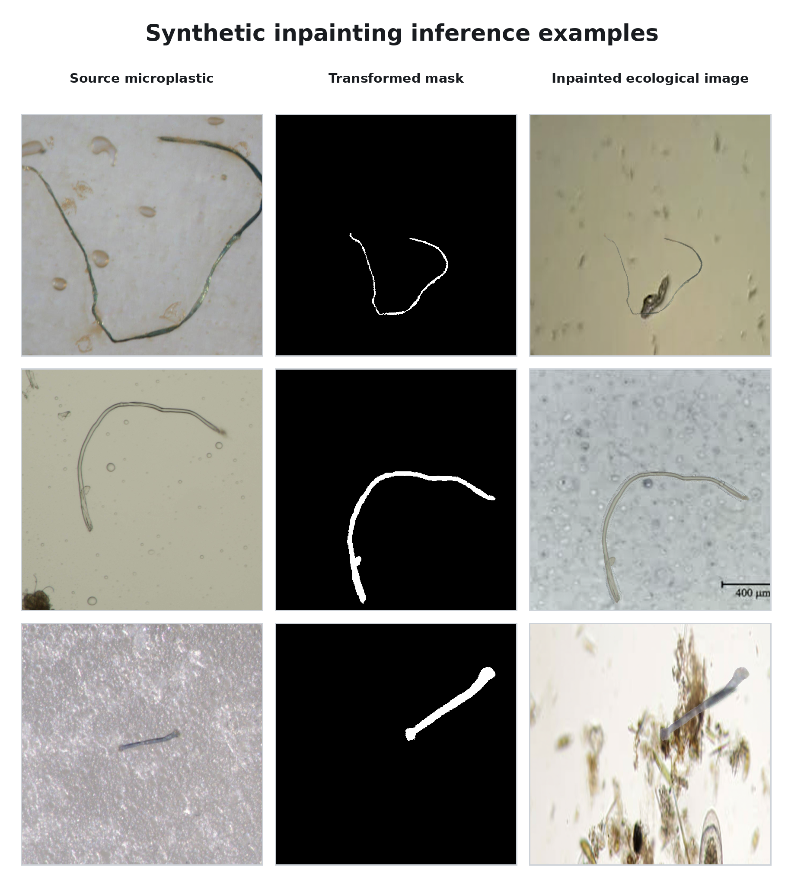
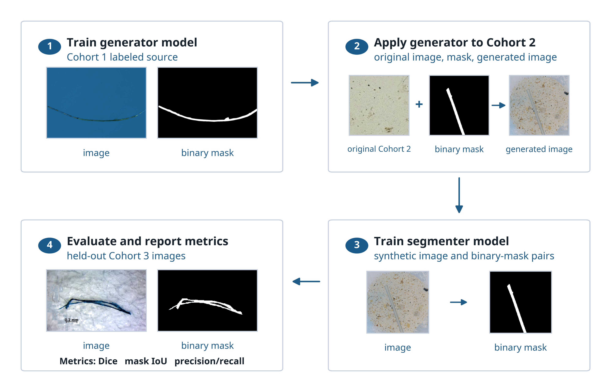
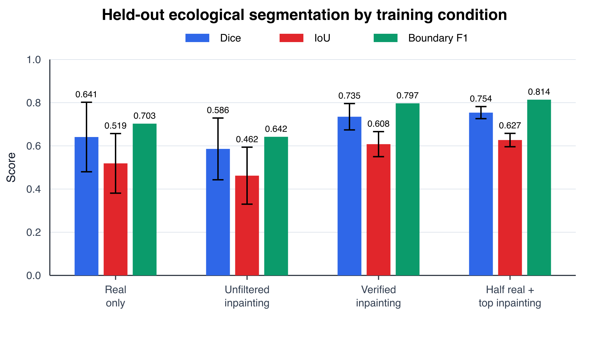

Microplastic Identification Using AI-Driven Image Segmentation with Synthetic Ecological Context
Affiliations
Abstract
Conventional methods for microplastic identification in water samples are costly, slow, and dependent on specialized expertise. We present a deep learning segmentation framework for identifying microplastic foreground in microscopy images and evaluate whether synthetic ecological context can improve model performance when labeled real data are limited. We also contribute a curated image dataset with manually segmented microplastic masks, adding paired image-mask examples for supervised training and held-out ecological evaluation. The workflow combines manually labeled laboratory microplastic images with generated inpainting examples selected for visible foreground change, non-empty masks, plausible object scale, and background diversity. In our results, adding verified synthetic examples improves segmentation across architectures by increasing exposure to diverse ecological scenarios while preserving pixel-level labels. The strongest synthetic-assisted model reaches Dice 0.817, IoU 0.704, and boundary F1 0.858 on the held-out ecological evaluation set, compared with Dice 0.743, IoU 0.619, and boundary F1 0.809 for the strongest real-only model. These results extend prior microplastic segmentation work by testing synthetic ecological context under matched held-out evaluation and show that high-quality synthetic examples can improve segmentation.
Data
This study draws on three image cohorts, each serving a distinct role in training or evaluation. Together, the assembled dataset contains 1,198 microscopy images, including 465 manually segmented image-mask pairs and 733 unlabeled ecological background images.
Models


Results
Overall, quality-controlled inpainting improves held-out ecological segmentation across the retained model matrix. The strongest verified-inpainting checkpoint is U-Net++ at seed 37, with Dice 0.817, IoU 0.704, boundary F1 0.858, precision 0.802, and recall 0.846. The strongest real-only checkpoint reaches Dice 0.743, IoU 0.619, and boundary F1 0.809. Thus, the top synthetic-assisted run improves Dice by 0.074 and IoU by 0.085 over the strongest real-only run.

Limitations
Several limitations qualify these findings. First, generated images, although visually plausible, may not capture the full variability and complexity of real-world ecological scenarios. Synthetic foregrounds may also encode generator-specific artifacts that improve benchmark performance without improving field reliability. Second, the dataset may not encompass all environmental contexts where microplastics occur, which may limit generalization to new sites, imaging devices, particle morphologies, or preparation protocols. Third, the held-out ecological test set is intentionally reserved for final evaluation, but it remains modest in size. Additional externally collected test sets would be needed to confirm robustness across laboratories, cameras, and sample preparation workflows.
Conclusion
This study demonstrates that quality-controlled synthetic ecological context can improve microplastic segmentation when labeled real-world data are limited. It also contributes a curated set of manually segmented microplastic microscopy images, providing paired image-mask labels for real supervised training and held-out ecological evaluation. Across the retained architectures, verified synthetic examples improved held-out ecological segmentation relative to real-only training, with the strongest synthetic-assisted model outperforming the strongest real-only model by 0.074 Dice and 0.085 IoU. The consistent gains across the retained model families support the central conclusion that synthetic ecological context can complement real labeled images when candidate generations are filtered before training. Future work should evaluate the approach across additional imaging platforms, environmental settings, and microplastic morphologies, as well as investigate more advanced generative methods and larger-scale ecological datasets. Integrating quality-controlled synthetic data with deep learning segmentation may help enable faster, more scalable, and more accessible microplastic monitoring workflows for environmental research and pollution assessment.